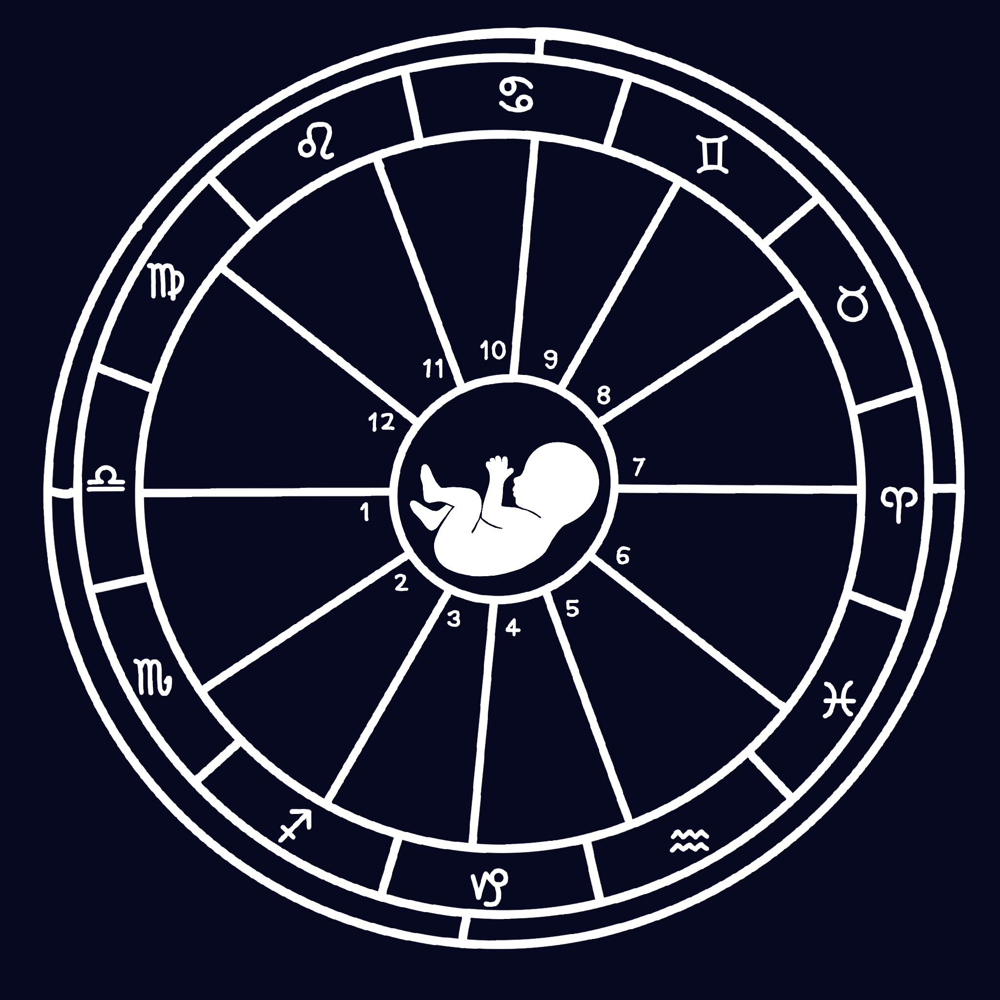

ORIGEM
Os primeiros estudos do zodíaco surgiram na mesopotâmia, a partir da observação de que os astros percorriam uma mesma faixa no céu. Esses movimentos eram usados para prever eventos e auxiliar atividades agrícolas.
Com o tempo, essa faixa foi dividida e, por volta do século V a.c., os babilônicos organizaram o sistema em 12 partes iguais, formando o zodíaco como conhecemos hoje.
MAPA ASTRAL
A astrologia é um conjunto de conhecimentos tradicionais e práticas que estuda a posição e o movimento dos astros para interpretar sua influência na personalidade humana, relacionamentos e eventos na terra.

PSICOLOGIA
Para o psicólogo e psiquiatra, Carl Jung, a atrologia funciona como uma ferramenta de interpretação e compreensão de pessoas. A interpretação astrológica para ele se baseia em arquétipos, que são representados por padrões universais, se manifestando pelo comportamento humano.
Para Carl Jung, "Não é o céu que determina o destino, mas ele reflete aquilo que somos". Ou seja, os signos não definem indivíduos de forma fixa, indo além de definições fixas e respostas imediatas.